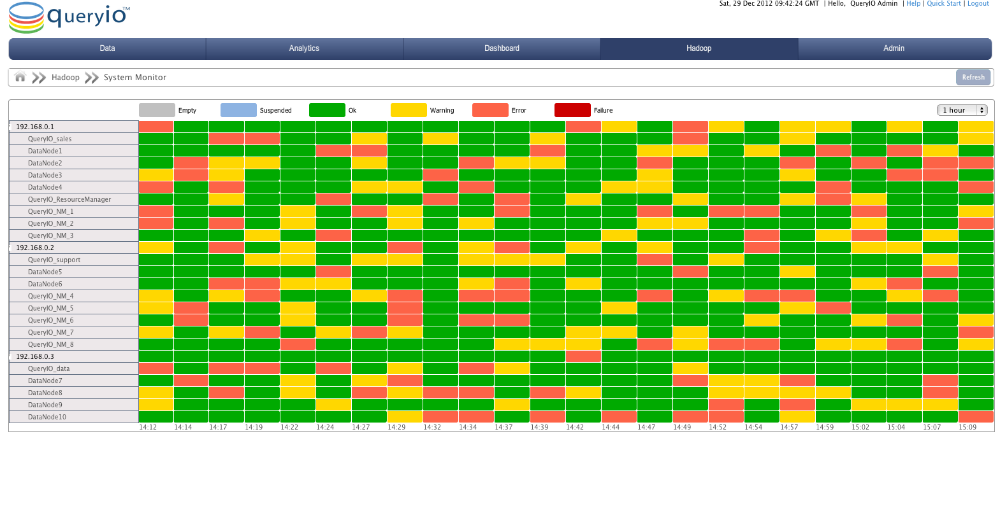

It displays status summary of all the NameNodes, DataNodes, ResourceManagers and NodeManagers in the QueryIO cluster. Status of nodes can be empty, suspended, ok, warning, error or failure.
Status view provides a quick color-coded view of the state of the host machines and NameNodes or DataNodes configured on host machines. Status is displayed in a graphical view with nodes against time. Displayed status time windows can be changed to 1 hour, 1 day, 7 days, 30 days, 90 days, 180 days or 360 days from the drop down menu.
Status of monitors is processed and the result is represented in color-coded cells in the matrix. Color codes are defined as follows:
| State | Color | Description |
| Empty | This state signifies there is no node. | |
| Suspended | The node has been manually suspended. | |
| OK | This status signifies that node is working fine. | |
| Warning | Signifies there is a warning for the node. | |
| Error | Signifies the a error has occurred on node. | |
| Failure | Signifies that node has failed. |
User can also click on Refresh button to get the latest details.